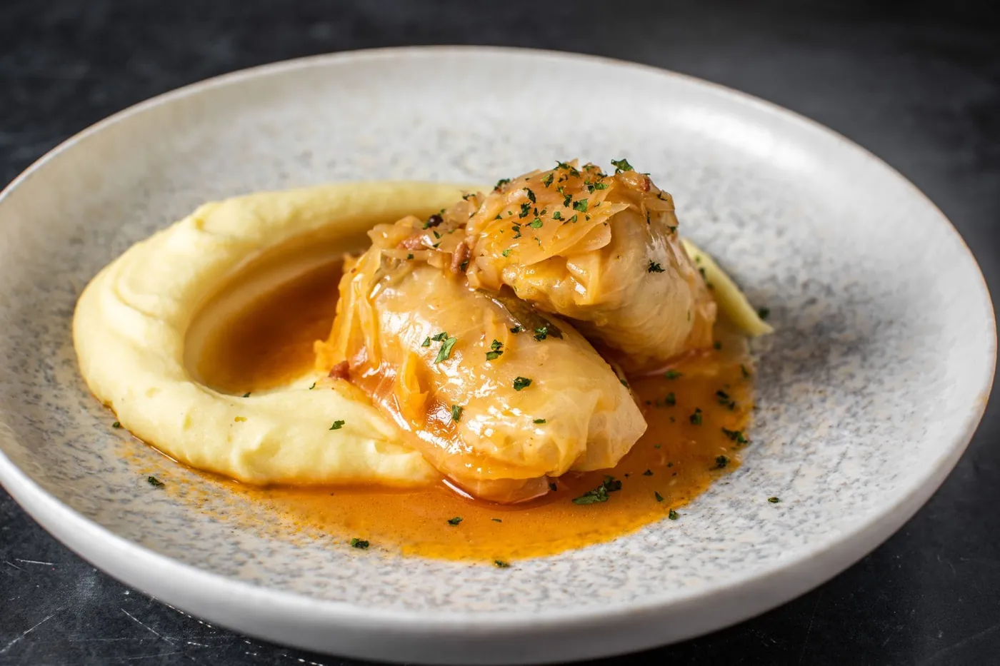
Kraljica zime
Sarma
Domaća delicija poznata i voljena u svakom kutku Balkana, poslužena na kremastom pire krumpiru. Svaki zalogaj podsjeća na bakinu kuhinju punu ljubavi i pažnje.
31 restoran · 18 gradova · jedan žar
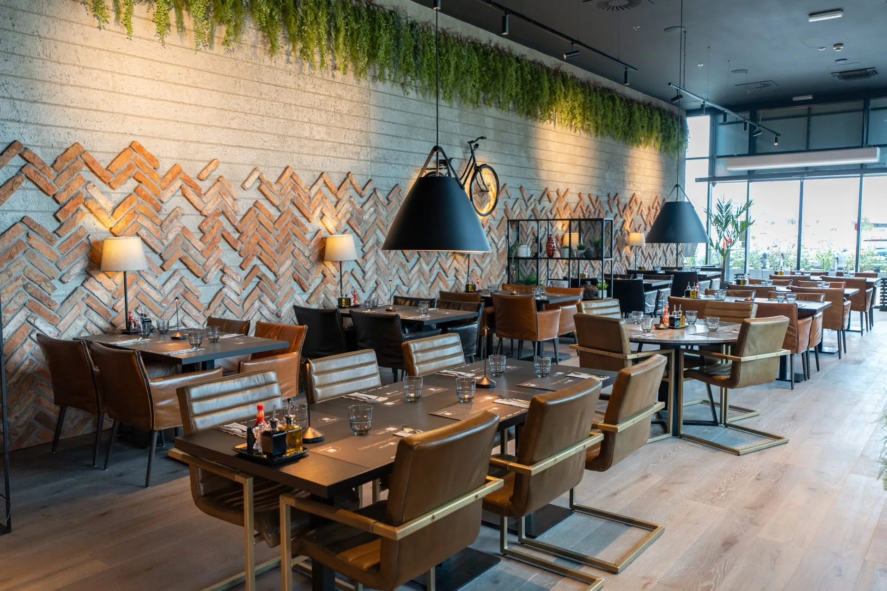
Grill restorani · diljem Hrvatske
Žar, društvo i ćevapi od stopostotne junetine. Od Tkalčićeve do Splitske rive, svaki Batak gori istim plamenom.
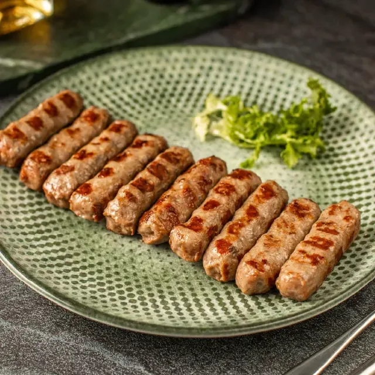
Batak · lanac grill restorana
Uđi, sjedni i pusti da žar odradi svoje. U Batku se ne dolazi samo jesti, nego dobro pečenu priču ispričati s ljudima koji su ti dragi: uz plate za dvoje, gablec u podne i stol koji nitko ne žuri napustiti.
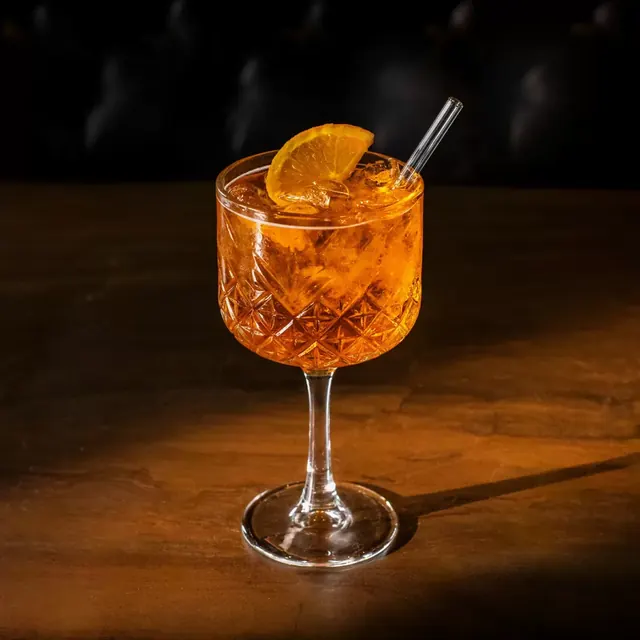
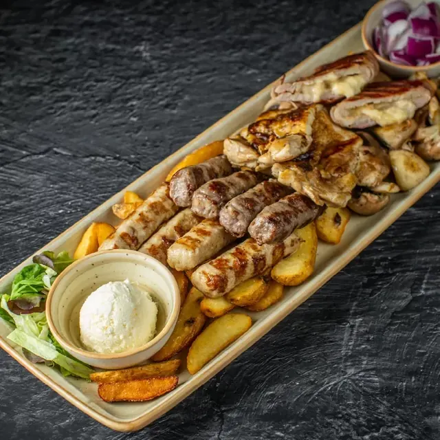
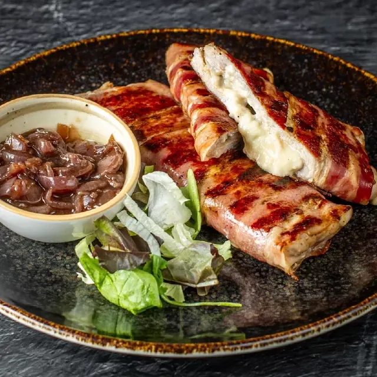
Sa žara
Plata Batak za dvoje složena je za stol koji se dijeli: juneći ćevapi sa sirom, pileći ćevapi, punjena vješalica, otkošteni batak zabatak, kriške mladog krumpira, šampinjoni i kajmak. Za one koji vole ljuće, tu je Gurmanska plata s urnebesom i pikantnim feferonima.
Ljudi iza žara
Iza svakog tanjura stoji ekipa: kuhari, konobari, šefovi kuhinje i voditelji koji Batak čine mjestom kamo se vraća. Zato u Batku svaka nova lokacija, od Bjelovara do Črnomerca, dobiva isti ambijent, isti žar i istu brigu za goste.
Radnim danom na meniju su i kuhana jela za gablec i marendu: varivo, paprikaš, punjena paprika i čobanac. Domaći okusi, ali na Batak način.
Pridruži se ekipi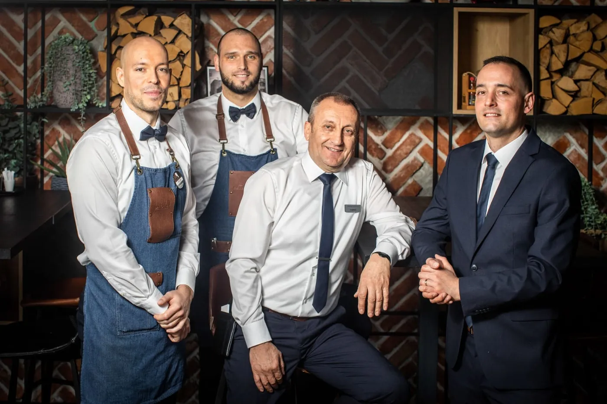
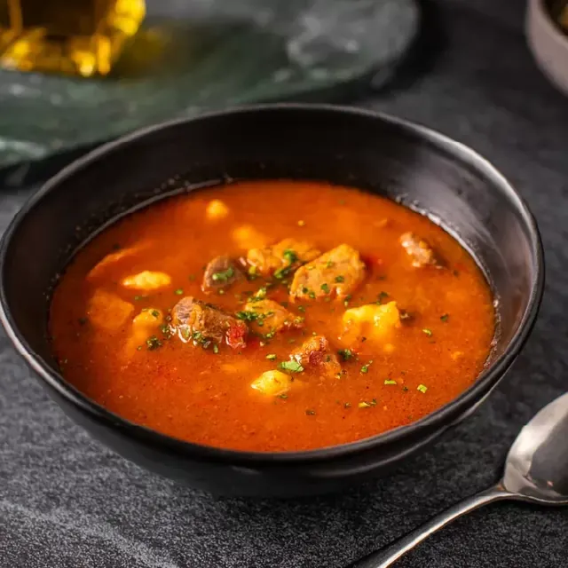
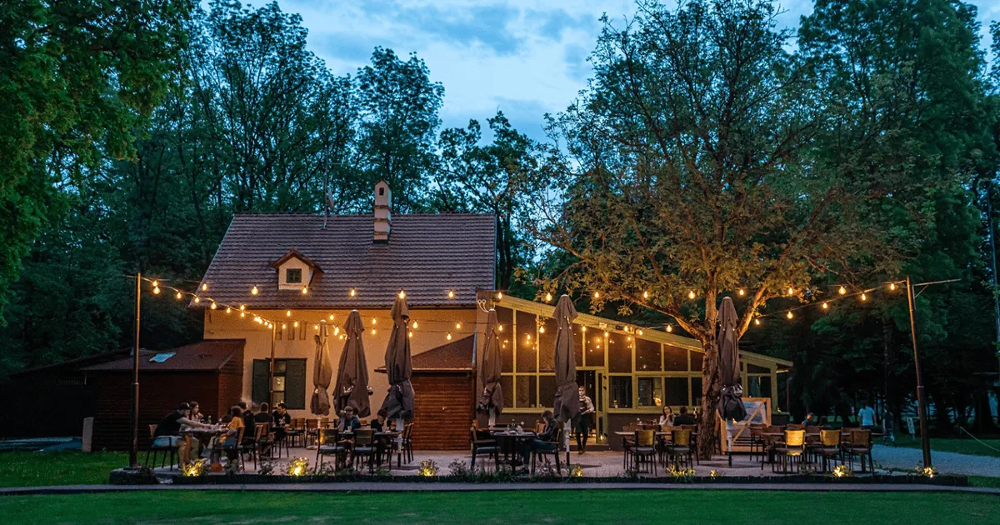
dobrodošli
Svaki stol u Batku
čeka svoje društvo.Batak Jarun · Aleja Matije Ljubeka 4
Zimska ponuda · novo u ponudi
Dolaskom hladnijeg vremena nema ništa ljepše od domaćih specijaliteta koji nas podsjećaju na tradiciju i ljubav prema hrani. Uz tradicionalna jela, na jelovnik je stiglo i novo sezonsko jelo: sarma.
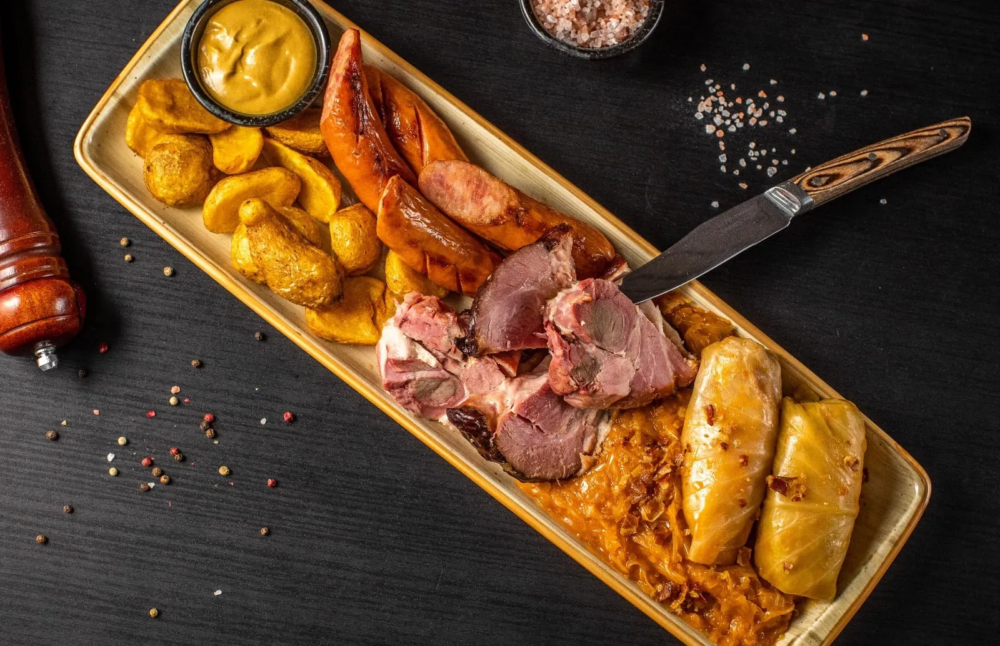
Tradicija na tanjuru
Na Zimskoj plati objedinili smo najbolje od tradicije: domaće sarme, savršeno začinjene češnjovke i sočan buncek sa zeljem koji grije i u najhladnijim danima. Uz mesne specijalitete dolaze domaći krumpir i senf.
Dodirni točku na tanjuru i upoznaj sastojke.

Kraljica zime
Domaća delicija poznata i voljena u svakom kutku Balkana, poslužena na kremastom pire krumpiru. Svaki zalogaj podsjeća na bakinu kuhinju punu ljubavi i pažnje.
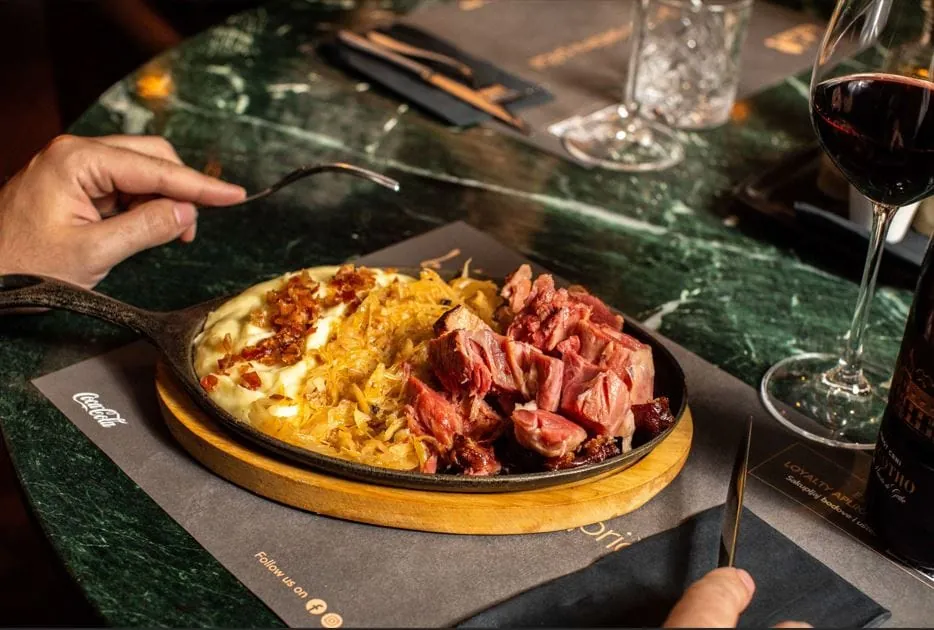
Zimski klasik
Poslužen na domaćem pire krumpiru i obogaćen hrskavom prženom slaninom. Sočan klasik koji nas okusom vraća u djetinjstvo. Zima bez njega jednostavno ne bi bila potpuna.
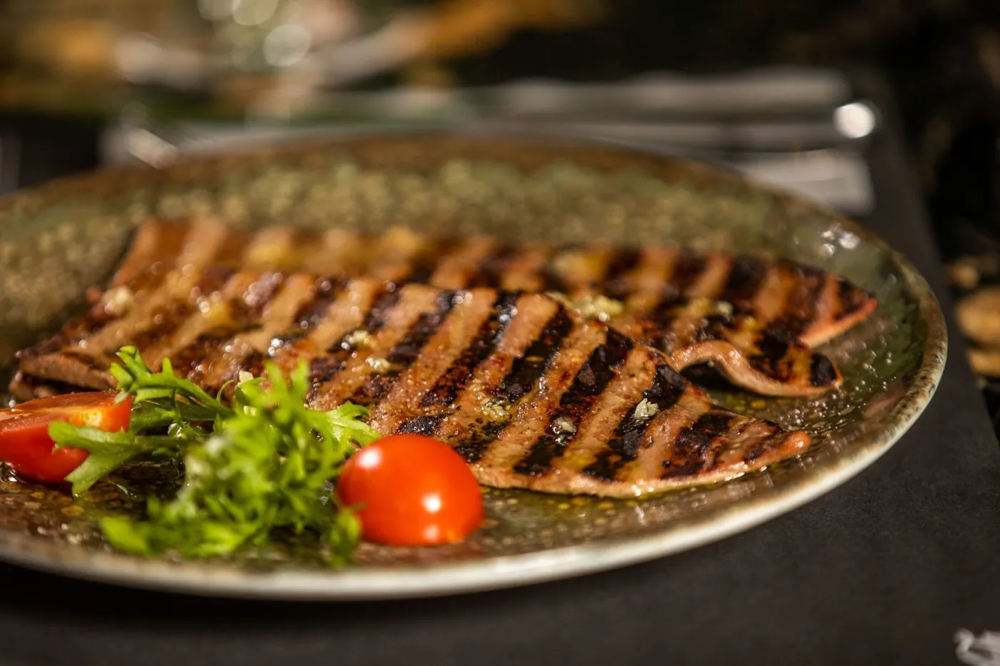
Za najveće gurmane
Tanko rezana, pažljivo pripremljena na žaru i obogaćena aromom svježeg češnjaka. Specijalitet za sve ljubitelje specifičnih okusa.
Zimski termometar
Povuci klizač, a mi ćemo ti reći što naručiti.
Vidimo se u Batku na omiljenim zimskim specijalitetima! Pročitaj objavu
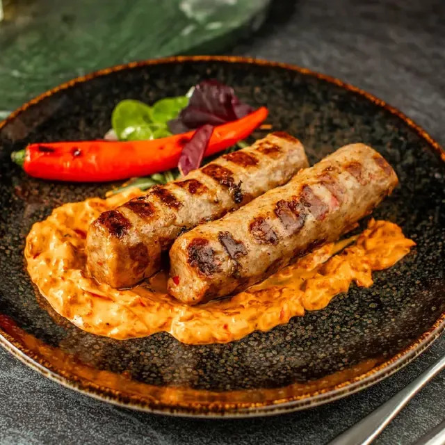
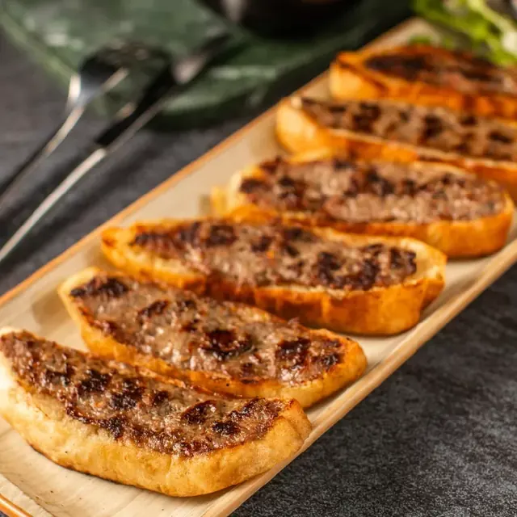
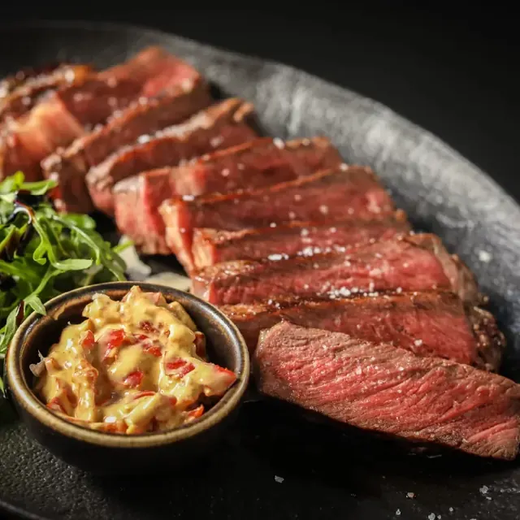
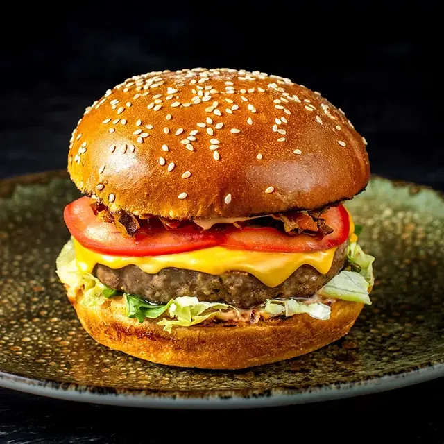
Lokacije
31 restoran
Nema rezultata. Probaj drugi pojam.
Batak aplikacija
Skupljaj bodove, saznaj novosti i pogodnosti prije svih. Rezerviraj stol u nekoliko dodira i prati što je novo u tvom Batku.
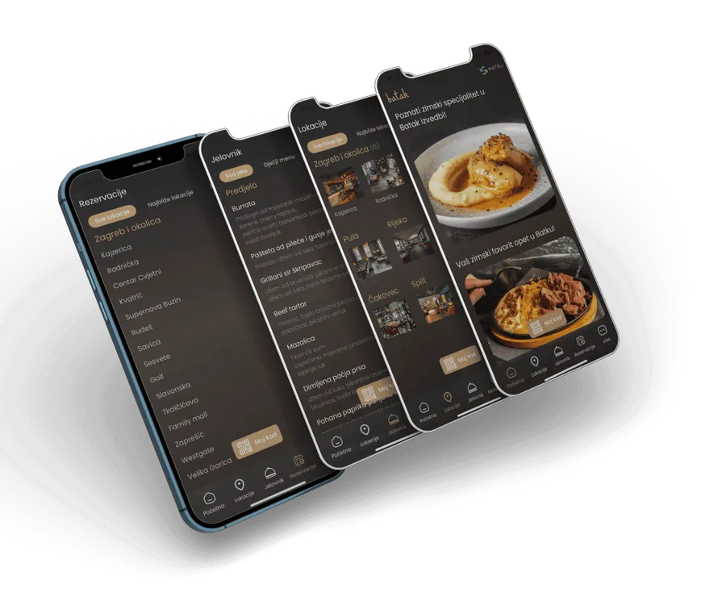
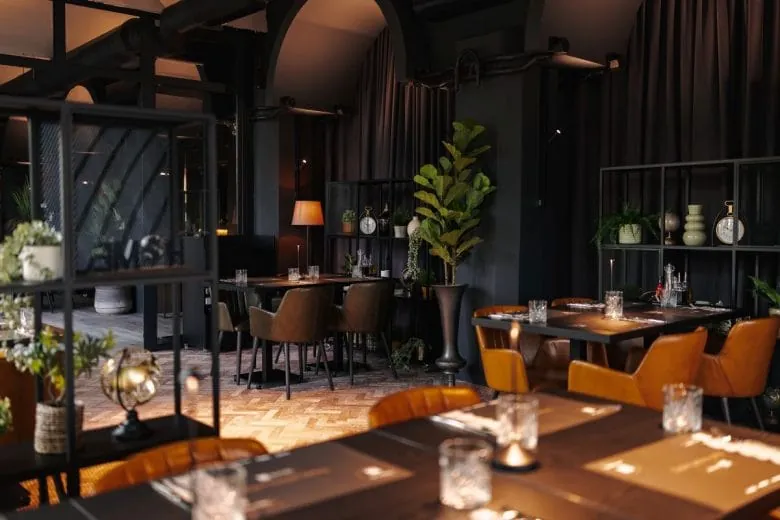
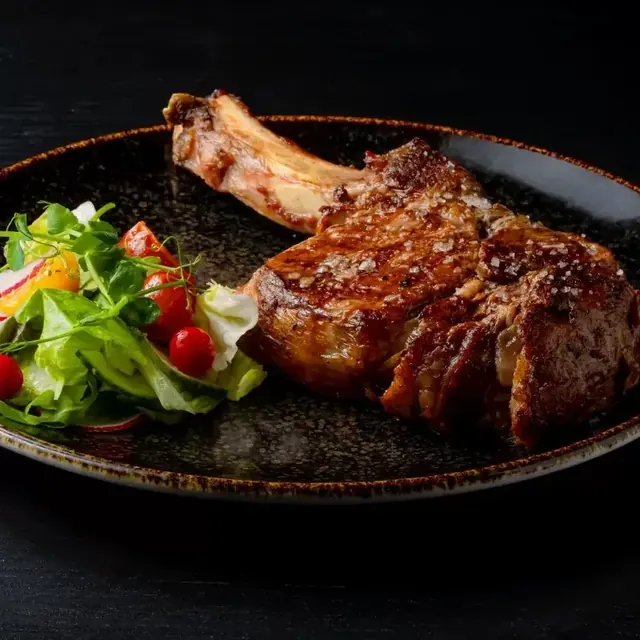
Rezervacije online